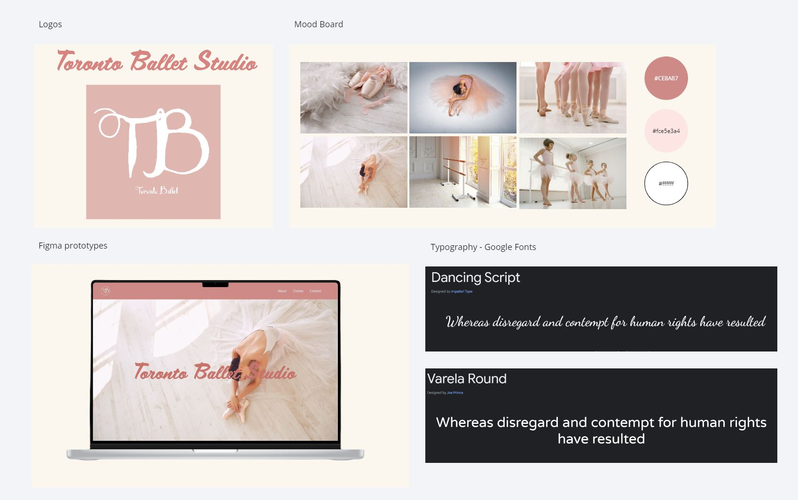
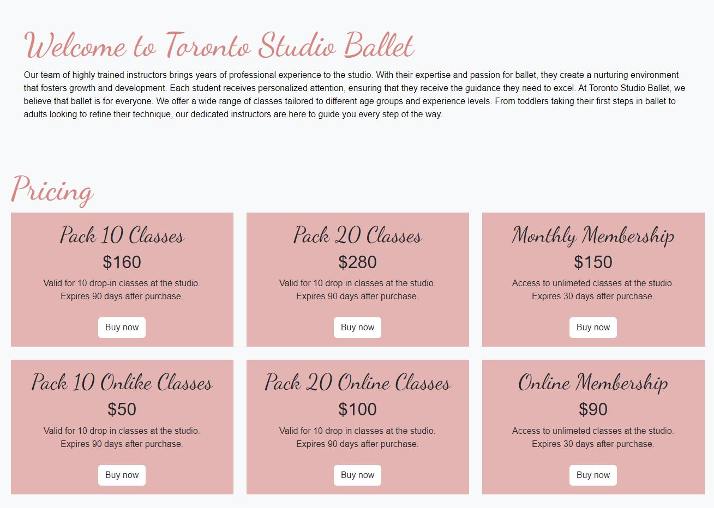
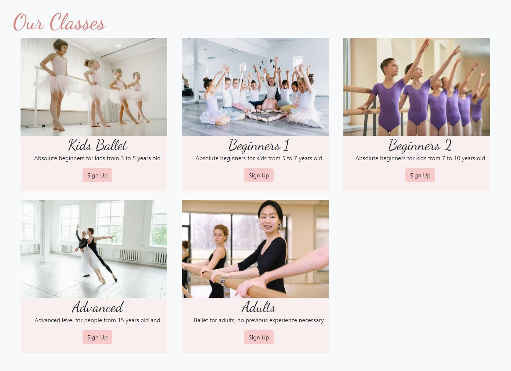

This was a school project where we needed to develop a responsive website. We were free to choose the theme of the website. I choose to develop a ballet website because I used to do ballet when I was younger, and I have great memories of it
I started by creating a mood board, selecting a colour palette, typography, and by selecting the images I was going to need. Then, I continue by exploring different ballet studio websites to know what information I should include. After this I decided I wanted to add the different packages of classes, an about page that gives a short bio of the couches, levels, and a contact page.
The images I used were taken from different royalty free sources, like Adobe stock, Pexels, and Pixabay. I created the logo using Adobe illustrator. I also sketched some possible low fidelity prototypes.
This project is mainly built using HTML, CSS, and Bootstrap. When I built this project, I only used media queries for the responsiveness. However, I’m working in updating this site by using Bootstrap. I like using Bootstrap over media queries because the code is a lot shorter, is faster to apply classes, and because I want to be more confident while using this framework.
I used flex boxes to display the prices of the classes, and a grid for the different levels that people can choose to go. For the gallery section I used a jQuery carrousel, which automatically changes the images, but also users can click on the arrows to move from one image to the other.
 This was a project I created in my second semester, so I’m happy of what I accomplished because I was just starting to understand the different concepts, and I was very excited to learn more. My new goal for this project is to change completely use Bootstrap, and to give it a modern look. I want the contact section can send a message. Lastly, I still have the same desire of learning more and be really good at coding and designing websites. But I know I have to be patient and master the fundamentals first. The rest will come eventually.